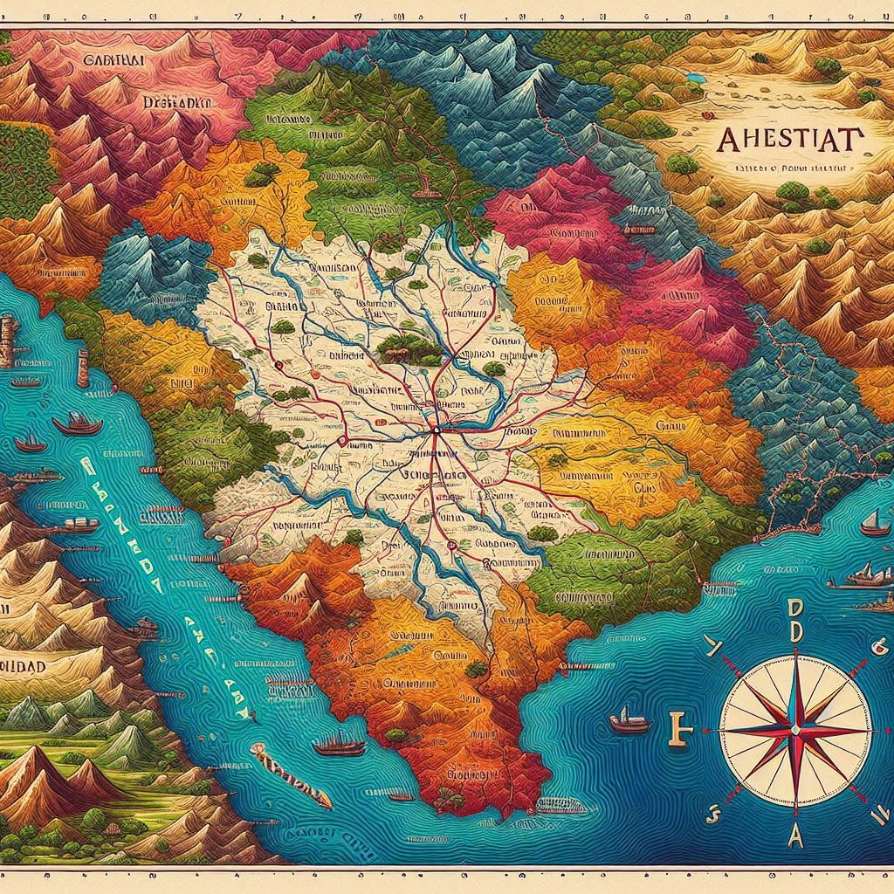
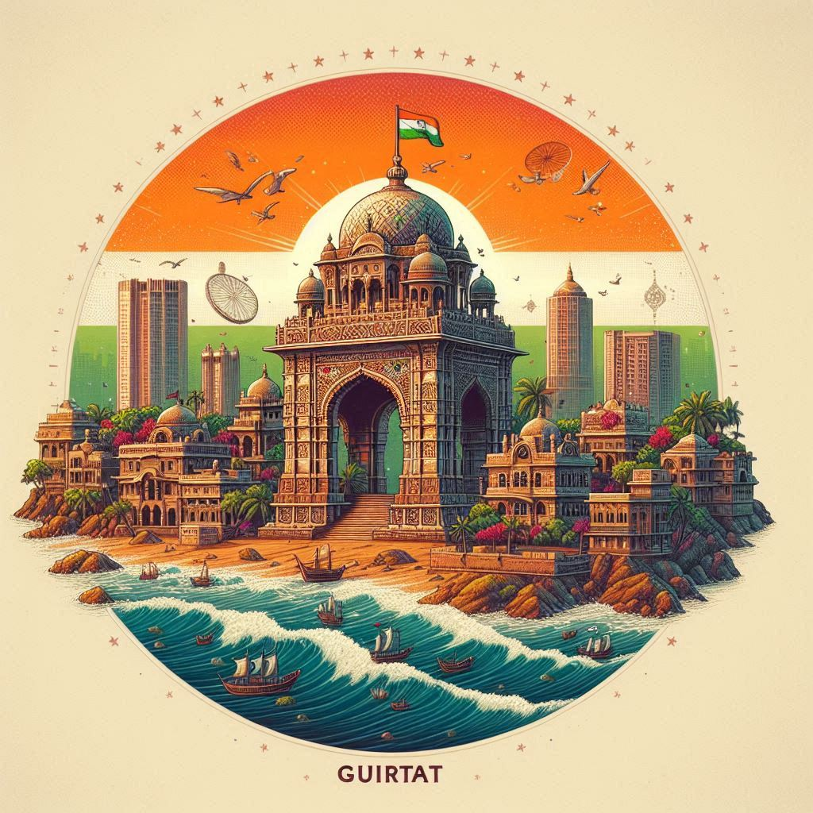

Gujarat is a state located on the western coast of India. It has a diverse and strategic geographical setting that plays a significant role in its cultural, economic, and historical development. Here is an overview of Gujarat's geographical location:
1. Location
- Latitude and Longitude: Gujarat is situated approximately between 20°1'N to 24°7'N latitude and 68°4'E to 74°4'E longitude.
- Borders:
- To the north and northwest, it shares an international boundary with Pakistan's Sindh province.
- It is bordered by the Indian states of Rajasthan to the northeast, Madhya Pradesh to the east, and Maharashtra to the southeast.
- To the southwest, it has a coastline along the Arabian Sea.
2. Coastline
Gujarat has a vast coastline of around 1,600 km, the longest among Indian states. This extensive coastline has led to the development of major ports such as Kandla, Mundra, and Porbandar, facilitating trade and economic growth. The Gulf of Kutch and the Gulf of Khambhat are important maritime features along the coast.
3. Major Geographical Features
- Rann of Kutch: The northern part of Gujarat is home to the Great Rann of Kutch and the Little Rann of Kutch. The Great Rann is a salt marsh, known for its white salt desert landscape, while the Little Rann is known for its wildlife sanctuary, home to the endangered Asiatic wild ass.
- Saurashtra Region: This is a peninsular region in Gujarat, surrounded by the Arabian Sea on three sides. It has a mix of hilly terrains and fertile plains and is known for its coastal towns and industries.
- Mainland Gujarat: The eastern part of Gujarat comprises fertile plains formed by rivers such as the Sabarmati, Narmada, Tapi, and Mahi. This area is agriculturally rich and forms the heartland of the state.
- Mountains and Hills: Gujarat has several hilly areas, including the Aravalli range in the northeast and small hills such as Girnar and Pavagadh in Saurashtra and central Gujarat.
4. Climate
Gujarat has a tropical climate, with hot summers, a monsoon season, and mild winters. The coastal areas have a humid climate, while the interior regions have a dry, arid climate.
- Summers (March to June) are hot, with temperatures often exceeding 40°C.
- Monsoon season (June to September) brings rainfall, varying across regions, with the southern part receiving more rain than the northern and arid areas.
- Winters (November to February) are mild, with temperatures ranging between 12°C and 29°C.


5. Islands and Unique Features
- Gujarat also includes the Diu Island (part of the Union Territory of Daman and Diu), and several smaller islands off the coast.
- The Gir Forest in Gujarat is a significant geographical feature as it is the only habitat of the Asiatic lion.
6. Natural Resources
Gujarat is rich in mineral resources such as limestone, lignite, bauxite, and oil reserves. It also has salt pans that contribute significantly to India's salt production.
Conclusion
Gujarat’s geographical diversity, with its vast coastline, arid regions, fertile plains, and rich natural resources, contributes to its importance in trade, agriculture, and culture. Its unique geographical setting, bridging maritime routes and land connections with neighboring regions, has made it a vital part of India's economy and history.